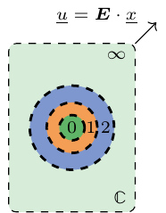
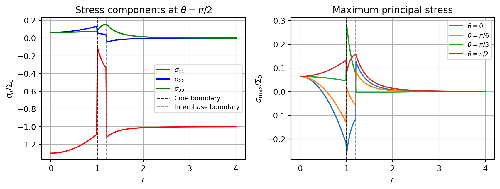

import numpy as np
from echoes import *
import math
np.set_printoptions(precision=8, suppress=True)
# to display only 8 significant digits of array components8 N-layer spheres
Generalized Eshelby problem
The Eshelby problem of the ellipsoidal inhomogeneity presented in Chapter 7 proves very useful as an elementary tool in the framework of estimation schemes or bounds where phases can be characterized by ellipsoids either considering the shapes of the heterogeneities themselves or from their spatial distribution. The major reason for the ellipsoidal shape stems from Eshelby’s result of uniformity of the strain and stress solutions.
To enrich the scope of possible representations of particles in a composite material, it is appealing to replace the ellipsoidal inhomogeneity by a particle of another shape or a particle showing internal heterogeneities, still considering an infinite homogeneous matrix and remote uniform strain or stress. This is called the generalized Eshelby problem. Unfortunately the uniformity of the strain and stress field within the particle doesn’t hold anymore if the shape is not ellipsoidal or in presence of internal heterogeneities.
However there are some particular cases of generalized Eshelby problems deserving special attention since analytical solutions of strain and stress fields can be derived. This is for example the case of the n-layer sphere with concentric homogeneous layers in the framework of isotropic linear elastic materials.

The solution to this problem has been given in (Love, 1944) and (Hervé and Zaoui, 1993) and extended to the case of imperfect interfaces between layers in (Hervé-Luanco, 2014).
Construction of a sphere_nlayers
A n-layer sphere particle is defined in Echoes by
spn = sphere_nlayers(radii=[R1, R2, ...],
prop={"C": [C1, C2, ...], ...},
interf_prop={"C": [[kn1, kt1, PRIMALDISC],
[kn2, kt2, DUALDISC], ...], ...}
)or alternatively
spn = sphere_nlayers(radius=R,
layer_fractions=[f1, f2, ...],
prop={"C": [C1, C2, ...], ...},
interf_prop={"C": [[kn1, kt1, PRIMALDISC],
[kn2, kt2, DUALDISC], ...], ...}
)Geometry
The geometry is defined either by the list of successive increasing radii or by the external radius and volume layer_fractions of each layer. If the sum of the list provided in layer_fractions is not equal to 1, the fractions are renormalized (so layer_fractions can somehow be seen as a list of barycentric weights).
Properties
The prop argument is a dictionary indexed by strings denoting the property (e.g. "C") with values which are lists of tensors, one per layer.
Interface properties
The optional interf_prop keyword-argument defines the properties of the successive interfaces (from the core to the external radius). This argument is also a dictionary indexed by the same strings as those of prop and with values defined by a list of interface descriptors. Each descriptor is a list of parameters:
[kn, kt, PRIMALDISC]for an interface of linear spring type with a displacement discontinuity \(\jump{\uv{u}}\) linearly related to the traction \(\uv{T}=\sig\cdot\n\) acting on the interface: \[\uv{T}=\left(k_n \,\n\otimes\n + k_t \,(\uu{1}-\n\otimes\n)\right)\cdot\jump{\uv{u}}\] APRIMALDISCinterface can be viewed as a very compliant interphase of infinitesimal thickness.[κ, µ, DUALDISC]for an interface of Gurtin-Murdoch type, allowing stress discontinuity balanced by a localized surface stress linearly related to the local surface strains. ADUALDISCinterface can be viewed as a very stiff interphase of infinitesimal thickness.[NODISC]for an ideal interface with displacement and traction continuities.
Interface types can be mixed from one interface to the other. In absence of interf_prop, all interfaces are assumed to be ideal as in (Hervé and Zaoui, 1993).
Modifying attributes
It is possible to change the values of the attributes of a sphere_nlayers after construction:
spn.set_radius(R)
spn.set_layer_fractions([f1, f2, ...])
spn.set_radii([R1, R2, ...])
spn.set_prop("C", layer_number, C)
spn.set_interf_prop("C", layer_number, [kn, kt, PRIMALDISC])where layer_number is an integer starting from 0 for the internal layer (consistently with Python numbering).
Concentration tensors for the n-layer sphere
Although the solution is not uniform, it is possible to calculate the average strains and stresses per layer and a fortiori over the whole n-layer sphere.
\[ \begin{aligned} \langle\eps\rangle_{\mathcal{S}}=\uuuu{A}^E:\E&&\\ \langle\eps\rangle_{\mathcal{S}}=\uuuu{A}^\Sigma:\Sig&\quad\textrm{ with }\quad \uuuu{A}^\Sigma=\uuuu{A}^E:\uuuu{C}^{-1}&\\ \langle\sig\rangle_{\mathcal{S}}=\uuuu{B}^E:\E&\quad\textrm{ with }\quad \uuuu{B}^E=\uuuu{C}^\mathcal{I}:\uuuu{A}^E&\\ \langle\sig\rangle_{\mathcal{S}}=\uuuu{B}^\Sigma:\Sig&\quad\textrm{ with }\quad \uuuu{B}^\Sigma=\uuuu{C}^\mathcal{I}:\uuuu{A}^E:\uuuu{C}^{-1}& \end{aligned} \tag{8.1}\]
The calculation of concentration tensors is carried out by the same procedure as for the ellipsoidal inhomogeneity (see Chapter 7), i.e. using set_ref to define the reference medium and then the attributes eE, eS, sE and sS.
spn = sphere_nlayers(radii=[1., 2.],
prop={"C": [stiff_kmu(2., 1.), stiff_Enu(5., 0.2)]},
interf_prop={"C": [[NODISC], [10., 5., PRIMALDISC]]}
)
C = stiff_kmu(3., 2.)
spn.set_ref("C", C)
print("AE=\n", spn.eE, "\n")
print("AS=\n", spn.eS, "\n")
print("BE=\n", spn.sE, "\n")
print("BS=\n", spn.sS, "\n")AE=
[[1.18350067 0.02801943 0.02801943 0. 0. 0. ]
[0.02801943 1.18350067 0.02801943 0. 0. 0. ]
[0.02801943 0.02801943 1.18350067 0. 0. 0. ]
[0. 0. 0. 1.15548124 0. 0. ]
[0. 0. 0. 0. 1.15548124 0. ]
[0. 0. 0. 0. 0. 1.15548124]]
AS=
[[ 0.23848908 -0.05038123 -0.05038123 0. 0. 0. ]
[-0.05038123 0.23848908 -0.05038123 0. 0. 0. ]
[-0.05038123 -0.05038123 0.23848908 0. 0. 0. ]
[ 0. 0. 0. 0.28887031 0. 0. ]
[ 0. 0. 0. 0. 0.28887031 0. ]
[ 0. 0. 0. 0. 0. 0.28887031]]
BE=
[[4.60340609 1.24013879 1.24013879 0. 0. 0. ]
[1.24013879 4.60340609 1.24013879 0. 0. 0. ]
[1.24013879 1.24013879 4.60340609 0. 0. 0. ]
[0. 0. 0. 3.3632673 0. 0. ]
[0. 0. 0. 0. 3.3632673 0. ]
[0. 0. 0. 0. 0. 3.3632673 ]]
BS=
[[ 0.8229032 -0.01791362 -0.01791362 0. 0. 0. ]
[-0.01791362 0.8229032 -0.01791362 0. 0. 0. ]
[-0.01791362 -0.01791362 0.8229032 0. 0. 0. ]
[ 0. 0. 0. 0.84081683 0. 0. ]
[ 0. 0. 0. 0. 0.84081683 0. ]
[ 0. 0. 0. 0. 0. 0.84081683]]
Layer-by-layer averages
Beyond the whole-particle average defined in Section 8.3, Echoes provides methods to query the concentration tensor per layer or over a cumulative sub-sphere. These are useful when the particle has an internal structure (core-shell, interphase…) and one needs to monitor the state in each region.
| Method | Description |
|---|---|
spn.layer_eE(i) |
\(\uuuu{A}^E\) averaged over layer i (external interface included, internal excluded by default) |
spn.layer_eE(i, external=False, internal=True) |
Same with custom interface treatment |
spn.sphere_eE(i) |
\(\uuuu{A}^E\) averaged over sub-sphere from core up to layer i (external interface included) |
spn.sphere_eE(i, external=False) |
Same, excluding the external interface |
spn.layer_sE(i), spn.sphere_sE(i) |
Same methods for stress concentration \(\uuuu{B}^E\) |
spn.layer_fraction(i) |
Volume fraction of layer i relative to the whole particle |
spn.radius(i) |
External radius of layer i |
Layers are numbered from 0 (innermost core). The consistency relation
\[ \uuuu{A}^E = \sum_r f_r^{lay}\,\uuuu{A}^E_r \tag{8.2}\]
can be used as a verification. The example below uses a coated sphere (stiff core + soft interphase) embedded in a matrix:
Per-layer concentration tensors — consistency check
np.set_printoptions(precision=5, suppress=True)
# 2-layer sphere: stiff core (E=100, nu=0.49) + soft interphase (E=10, nu=0.2)
Co = stiff_Enu(30., 0.3) # reference medium (matrix)
Ci = stiff_Enu(100., 0.49) # core
Citz = stiff_Enu(10., 0.2) # interphase
R = 1.; ep = 0.2 # core radius, interphase thickness
spn2 = sphere_nlayers(radii=[R, R + ep], prop={"C": [Ci, Citz]})
spn2.set_ref("C", Co)
# Per-layer geometry
for i in range(2):
print(f"Layer {i}: radius = {spn2.radius(i):.3f}, fraction = {spn2.layer_fraction(i):.5f}")
# Global and per-layer averages
print("\nGlobal eE:\n", spn2.eE)
print("\nCore (layer 0) eE:\n", spn2.layer_eE(0))
print("\nInterphase (layer 1) eE:\n", spn2.layer_eE(1))
# Sub-sphere up to core only (cumulative average over the core)
print("\nSub-sphere (core only) eE:\n", spn2.sphere_eE(0))
# Consistency check: weighted sum of per-layer averages == global average
check = sum(spn2.layer_fraction(i) * spn2.layer_eE(i) for i in range(2))
print("\nMax error (weighted sum vs global):", np.max(np.abs(check - spn2.eE)))Layer 0: radius = 1.000, fraction = 0.57870
Layer 1: radius = 1.200, fraction = 0.42130
Global eE:
[[1.04527 0.03882 0.03882 0. 0. 0. ]
[0.03882 1.04527 0.03882 0. 0. 0. ]
[0.03882 0.03882 1.04527 0. 0. 0. ]
[0. 0. 0. 1.00645 0. 0. ]
[0. 0. 0. 0. 1.00645 0. ]
[0. 0. 0. 0. 0. 1.00645]]
Core (layer 0) eE:
[[ 0.29054 -0.13649 -0.13649 0. 0. 0. ]
[-0.13649 0.29054 -0.13649 0. 0. 0. ]
[-0.13649 -0.13649 0.29054 0. 0. 0. ]
[ 0. 0. 0. 0.42703 0. 0. ]
[ 0. 0. 0. 0. 0.42703 0. ]
[ 0. 0. 0. 0. 0. 0.42703]]
Interphase (layer 1) eE:
[[2.08199 0.27964 0.27964 0. 0. 0. ]
[0.27964 2.08199 0.27964 0. 0. 0. ]
[0.27964 0.27964 2.08199 0. 0. 0. ]
[0. 0. 0. 1.80235 0. 0. ]
[0. 0. 0. 0. 1.80235 0. ]
[0. 0. 0. 0. 0. 1.80235]]
Sub-sphere (core only) eE:
[[ 0.29054 -0.13649 -0.13649 0. 0. 0. ]
[-0.13649 0.29054 -0.13649 0. 0. 0. ]
[-0.13649 -0.13649 0.29054 0. 0. 0. ]
[ 0. 0. 0. 0.42703 0. 0. ]
[ 0. 0. 0. 0. 0.42703 0. ]
[ 0. 0. 0. 0. 0. 0.42703]]
Max error (weighted sum vs global): 2.220446049250313e-16Pointwise localization fields
The n-layer sphere also provides pointwise localization tensors that give the local strain or stress at any point \((r, \theta)\) as a linear function of the remote loading. For example the local stress under remote stress reads
\[ \sig(r, \theta) = \uuuu{b}^S(r, \theta) : \Sig \]
In Kelvin-Mandel representation, \(\mat{b}^S(r, \theta)\) is a \(6\times6\) matrix. The four variants following the notation of Chapter 7 are:
| Method | Local field | Remote load |
|---|---|---|
spn.loc_eE(r, theta) |
\(\eps(r,\theta)\) | \(\E\) |
spn.loc_eS(r, theta) |
\(\eps(r,\theta)\) | \(\Sig\) |
spn.loc_sE(r, theta) |
\(\sig(r,\theta)\) | \(\E\) |
spn.loc_sS(r, theta) |
\(\sig(r,\theta)\) | \(\Sig\) |
The argument theta is the polar angle measured from the \(\ve{e}_3\) axis. Due to spherical symmetry the azimuthal angle plays no role. The local stress tensor is recovered by invKM():
sigma_local = invKM(spn.loc_sS(r, theta).dot(S_KM))The example below plots stress profiles through the same 2-layer sphere (stiff core + soft interphase) under remote uniaxial compression \(\Sig = -\Sig_0\,\ve{3}\otimes\ve{3}\):
Figure — stress profiles in the multi-layer sphere
import matplotlib.pyplot as plt
# Remote uniaxial stress along e_3: Sigma_33 = -1 (KM component index 2)
S = np.array([0., 0., -1., 0., 0., 0.])
r_vals = np.linspace(0., 4 * R, 300)
fig, axes = plt.subplots(1, 2, figsize=(9, 3.5))
# -- Left plot: diagonal stress components along equatorial direction (theta = pi/2)
s11 = []; s22 = []; s33 = []
for r in r_vals:
sigma = invKM(spn2.loc_sS(r, np.pi / 2).dot(S))
s11.append(sigma[0, 0])
s22.append(sigma[1, 1])
s33.append(sigma[2, 2])
axes[0].plot(r_vals, s11, 'r-', label=r'$\sigma_{11}$')
axes[0].plot(r_vals, s22, 'b-', label=r'$\sigma_{22}$')
axes[0].plot(r_vals, s33, 'g-', label=r'$\sigma_{33}$')
axes[0].axvline(x=R, color='k', linestyle='--', lw=1, label='Core boundary')
axes[0].axvline(x=R + ep, color='gray', linestyle='--', lw=1, label='Interphase boundary')
axes[0].set_xlabel(r'$r$')
axes[0].set_ylabel(r'$\sigma_{ii} / \Sigma_0$')
axes[0].set_title(r'Stress components at $\theta=\pi/2$')
axes[0].legend(fontsize=8); axes[0].grid(True)
# -- Right plot: maximum principal stress for several polar angles
for theta, lbl in zip([0., np.pi / 6., np.pi / 3., np.pi / 2.],
['0', r'\pi/6', r'\pi/3', r'\pi/2']):
smax = [float(np.max(np.linalg.eigvals(invKM(spn2.loc_sS(r, theta).dot(S))).real))
for r in r_vals]
axes[1].plot(r_vals, smax, label=rf'$\theta = {lbl}$')
axes[1].axvline(x=R, color='k', linestyle='--', lw=1)
axes[1].axvline(x=R + ep, color='gray', linestyle='--', lw=1)
axes[1].set_xlabel(r'$r$')
axes[1].set_ylabel(r'$\sigma_{\max} / \Sigma_0$')
axes[1].set_title('Maximum principal stress')
axes[1].legend(fontsize=8); axes[1].grid(True)
plt.tight_layout()
plt.show()
\(\,\)